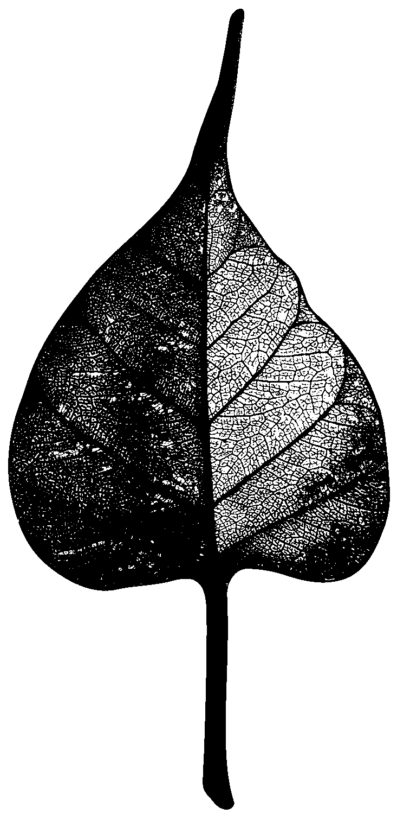

$400m+
Given, across the arc of thirty years. Most of it to organisations no-one else was funding yet.

This is an argument about what makes a society possible — assembled from three decades of practice, two intersecting lives, and the spaces between civil society, state and market.
“We came into wealth we did not plan for. We realised, early, that it did not fully belong to us. A country of 1.4 billion people cannot be held together by government and markets alone. It needs something older and harder to measure: a thriving civil society. For more than thirty years, we have tried to help build that. Not as a project. As a practice.”
A good society emerges when each does what only it can do — and trusts the others enough to let them. Our work has lived across all three. Separately. Together. In the spaces between.
They lived inside the same household and asked different things of it. The exhibit that follows is the conversation between those questions — and what each, eventually, required of the other.
She began with people, not platforms. With reading rooms, riverbeds, the inside of a clinic at 6 a.m. She asked whether the institutions we build can hold the dignity of those who live inside them.
He began with architecture. With the rails beneath an economy. He asked whether public infrastructure could be built once, openly, so that a billion people could build on top of it without asking permission.
“They did not follow these conversations. They started them.”
Three decades. One question: what does it feel like to be an empowered citizen in India? Not on paper. In courtrooms. Classrooms. Forests. Clinics. Where rights meet reality — or fail to.
Ideas before proof. Institutions before scale. Someone had to.
The throughline is not a sector. It is the slow, unfashionable work of imagining a public — and then funding the people who tend to it.
One of the companies that made India the world's technology back office. Then he left to do something harder — to build the rails beneath an economy of 1.4 billion people, in the open, for anyone to use.
A country of 1.4 billion. Even the largest cheque, deployed as a service, reaches a rounding error.
“Fund the rails. Not the services.”
Markets build for margin. Governments build for mandate. Protocols come years before scale — and almost only philanthropy can fund them. Patient enough to be wrong. Public enough to be useful when it works.
100 AI diffusion pathways by 2030. Agriculture. Health. Learning. Mobility. Climate.
In any country willing to host them. Back inclusion at scale.
Not every bet is a protocol. Some are a courtroom, a riverbank, a classroom, a theatre. A few of the organisations we backed early — and what they grew into.
A niche experiment in access to justice — now a field of its own.
Disaster resilience, built and recorded at the hyper-local scale.
The Indian Institute of Human Settlements — 1,600+ publications, 400+ partnerships, national and global.
Spaces where public life is made — theatre, conversation, science.
Empowering people and unlocking possibilities across the learning-to-earning continuum.
A documentary on the biosphere — one of its kind. Stories, carried further.
Mental health, in public — and growing.
Pooled capital. Shared risk. Longer patience. The collaboratives we increasingly choose to work through — because the work asks for it.
A global network supporting system orchestrators — the people who build the connective tissue between civil society, state and market.
Patient capital for systems change in health, education and gender equity. Long horizons. Country-led. Built to outlast its funders.
A pooled fund for country-led adoption of Digital Public Infrastructure, at population scale.
Helping 25+ countries build their own digital public infrastructure. Implementation knowledge. Not export.
Systems without society
become extractive.
Society without systems
struggles to scale.
Fund the rails. Or fund the people who tend them. Pick the hard problem you can stay with for ten years. Then join a pool — and let the work be larger than any one cheque.
A country of 1.4 billion cannot be held together
by government and markets alone.
It needs a thriving civil society.